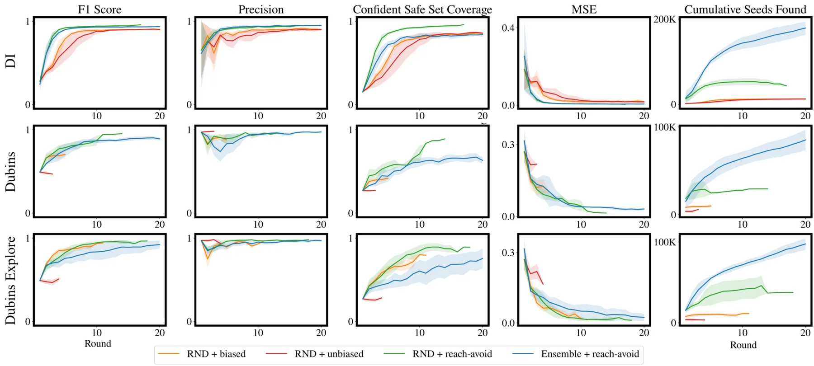
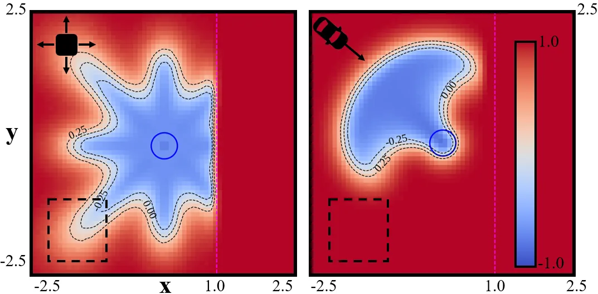
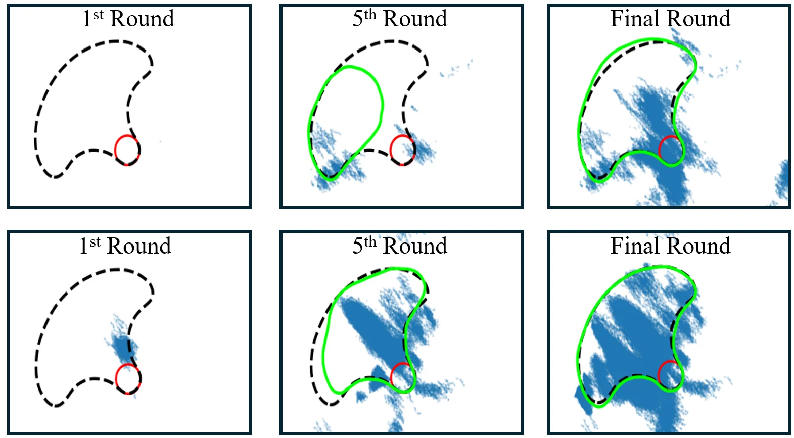
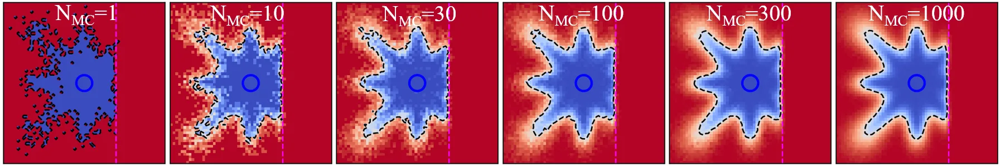
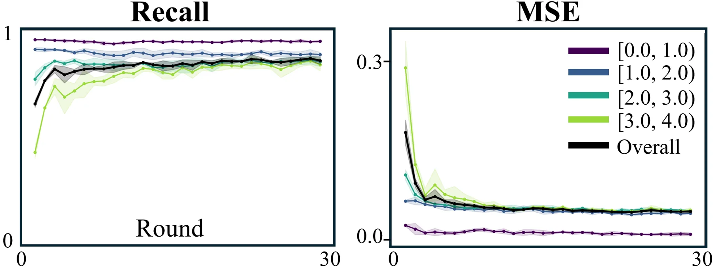

主动可达性学习：人形机器人的可恢复性运行时监控
Active Reachability Learning for Humanoid Recoverability Monitoring
把“机器人还能不能救回来”写成一个有限时域 liveness 值函数，用 TD+MC 混合目标学它、用 reach-avoid 探索器主动去踩包络边界；G1 上验证集 F1 0.957、OOD 推挤集 0.918，闭环里把退化策略的跌倒率从 47.75% 压到 20.75%，提前 0.58 s 预警。
F1 (val)
F1 (OOD)
lead time
fall rate (degraded)
作者、单位与技术谱系 · Research context
作者与单位
研究脉络
- DeepReach（Bansal & Tomlin, ICRA 2021）方法基座关系：把高维 Hamilton-Jacobi 可达性用深度网络近似；本文保留“值函数 + 集合水平集”的表述，但把 PDE 求解换成对回退策略的采样式值学习。[论文 §I 与 §III-B]
- Feng, Qiu, Bansal（RSS 2025）Bridging MPC and deep learning for scalable reachability团队前作关系：同一团队把可达性学习与在线优化衔接；本文把“值学习 + 数据覆盖”这条线推进到接触丰富的人形系统。[论文参考文献 [8]]
- Wang, Bowden, Crosby, Bansal（RSS 2026）discounted liveness formulation团队前作关系：把 liveness 表述用于离线策略评估；本文把同一类 liveness 值用于运行时监控与数据增广。[论文参考文献 [15]]
合作网络
- Stanford ↔ Amazon（共同署名）Stanford University → Amazon关系：共同署名：五位作者同时标注两个机构[论文首页署名]
- 本文探索器 → Feng et al. 2026 可达性工具箱Active Reachability 探索器 → Gradient-free neural HJ reachability（[22]）关系：明确技术依赖：用该工具箱求解探索器的 reach-avoid 值[论文 §III-C]
- 仿真平台依赖：mjlabG1 实验 → mjlab（Zakka et al. 2026）关系：明确技术依赖：50 Hz GPU 仿真环境[论文 §IV-B]
署名与单位来自论文首页；团队前作的判断依据是引用编号与作者重合（同一资深作者），属于“基于来源的解读”。脚注“work done while interning at Amazon”在 HTML 排版中归属不唯一，已标为待核验，未推断任何师生关系。
方法本质拆解 · What actually changed
是不是微调？
不是微调现成模型，而是逐系统从零训练值网络：先由回退策略 π 从窄初始分布 rollout 出数据集，再交替“拟合 V_θ 与不确定性估计器”和“训练探索器采新数据”。真正的“预训练”只有两处可借用的现成件：不确定性估计器（值网络集成或 RND）与学习型可达性工具箱（用于解探索器的 reach-avoid 问题），它们各自独立训练，不与答案网络共享权重。
有没有额外约束？
约束体现在目标函数与集合定义里，而不是损失惩罚项：值定义为未来运行最小值的期望（最差情况而非平均），有限时域 K=150 步的截断是显式假设（假定成功恢复的谷值在该窗口内出现）；探索目标集与避集用连续函数 g_explore / l_explore 定义，天然给出稠密梯度；部署触发用 ε_V 而探索停止用 ε，两者被强制拉开。隐含前提是系统随机性可建模（观测噪声 + 域随机化），而不是最坏情况有界扰动——作者解释了原因：多源最坏情况叠加会把人形的可恢复域压得不可用。
推理/后端到底做了什么？
在线只做一次前向：把当前状态送入 V_θ 与 σ，若 V_θ > ε_V 或 σ > ε_σ 就切到平衡策略 π，直到回到静止目标集。没有在线优化、没有 rollout、没有 MPC；昂贵的部分（MC 标签、探索、6 小时合成）全部离线。也正因如此，它无法利用“未来几帧可能看到的信息”，只能对当前状态做一次判断，作者把这条列为“reactive rather than proactive”。
方法本质是什么？
本质是把“安全边界”变成一个可学习的回归目标，再用“不确定性高就当作不可恢复”把 OOD 外推的风险单向化：宁可误判为不可恢复（触发回退），不可误判为可恢复（放过跌倒）。数据侧的对应动作是主动去踩边界——探索器被奖励走向高不确定区域、同时被避集挡住已经确定失败的区域，于是训练集沿着包络边缘生长。它改变的不确定性是“当前状态离不可恢复有多远、以及这个判断有多可信”；它没有做的是在线更新、校准与多步前瞻。
输入整机状态与一个固定回退策略；用 TD+MC 学有限时域最差值、用 reach-avoid 探索器主动补边界样本；在线以“值超阈值或不确定性超阈值”触发回退；直接效果是 OOD 召回与闭环跌倒率同时改善。

桥接价值Bridge
桥接价值
这篇把“可靠性”拆成两个可测量的量：liveness 值 V(x)（当前状态在回退策略下未来最差能到多好）与认知不确定性 σ(x)，并用 ε_V ≪ ε 把“部署触发阈值”和“探索停止阈值”分开。对我们的价值在于提供了一个可复制的判据结构：不是用固定协方差阈值判断“位姿是否可信”，而是学一个值函数，再把它的不确定性与值本身一起作为触发条件。它天然横跨“可靠状态估计”与“具身决策”两层——输出不是动作，而是“要不要切换到保守模式”的二元决策及其提前量。
方法与模块Method
方法摘要
双层循环。内层学有限时域值 V(x,k)=E[min_{k≤κ≤K} g(x_κ)]，目标混合两项：TD-λ 多步备份（m 从截断几何分布采样，取运行最小值与 stop-gradient 自助）与少量 Monte Carlo 长时域锚点（每个状态 N_MC 条 rollout 的平均最小值），权重 β 平衡；时间课程从 k=K−1 逐步扩展到全时域。外层把探索写成 backward reach-avoid tube：目标是高认知不确定性集合 G_explore={σ<ε_σ}，避集是“高预测失败且低不确定性”的 A_explore，用现成的学习型可达性工具箱训练探索策略 π_explore，从回放池状态出发寻找新种子，再用回退策略 π 从种子 rollout 补充数据，直到一轮新种子少于 N_min。
可迁移模块
第一，TD+MC 混合目标：当无偏标签（长时域真值）昂贵、而有偏标签（自助）廉价时，用少量无偏锚点稳住尺度、用大量 TD 保证局部一致性——我们的残差/一致性模型、可信度回归都可以照搬这个配方。第二，不确定性引导的 reach-avoid 数据采集：不是随机采样，也不是最大化任务奖励，而是“走向高不确定但不至于完全不可恢复”的区域，这可以直接用于主动采集退化场景（弱纹理、动态遮挡、GNSS 失锁）。第三，双阈值设计（触发阈值 ε_V 远小于探索停止阈值 ε）：避免“用于训练覆盖的宽松阈值”被误当成“部署触发阈值”，这是一个容易在工程里被忽略的细节。

证据Evidence
关键证据与数字
玩具系统：DI 上 RND+reach-avoid 覆盖率 0.941、F1 0.949、MSE 0.006，优于随机无偏（0.861 / 0.907）与随机有偏（0.865 / 0.912）；Dubins 车上 reach-avoid 覆盖率 0.656，而无偏探索只有 0.267、有偏 0.408，给探索器加侧向控制后升到 0.921、F1 0.970。目标消融（DI）：TD+MC 的 F1 0.949 / MSE 0.006，TD-only 为 0.912 / 0.015；N_MC 从 1000 降到 1 时覆盖率从 0.941 崩到 0.490。G1 人形（69 维状态、29 自由度、mjlab 50 Hz、K=150 即 3 s）：验证集 F1 0.957±0.001、覆盖率 0.944；OOD 100 N 推挤集 F1 0.918±0.009、覆盖率 0.815，OOD 召回从 0.672 升到 0.893（最难 bin 从 0.425 到 0.871）。闭环：健康策略在最强推挤（T_max=0.30 s）下跌倒率 12.21%→8.94%（相对降 26.8%），退化策略 47.75%→20.75%（降 56.5%），且在最强扰动下平均提前 0.58 s 给出高置信失败预测。
边界与下一步Limits & Next Step
边界与风险
包络是相对给定回退策略定义的：换一个更弱的平衡策略，可恢复集合会整体收缩，监控器的“正确性”也随之改变，因此它不能脱离 π 单独复用。作者明确写了三条限制——框架目前只能对 OOD 输入做事后反应而非提前预防、学到的解未校准、可达覆盖率受探索器动作空间上界约束；这在数字上也看得到：Dubins 车即便用 reach-avoid 也只覆盖 0.656，必须给探索器加侧向速度才到 0.921。对我们是三类风险：一是 6 小时/策略的合成成本与 50 Hz 仿真耦合，难以在线更新；二是真机只做了定性展示，状态估计误差（机身速度与高度由轻量 LSTM 从本体感受估计）如何传入监控器未被量化；三是闭环残余跌倒率仍有 8.94%（最强扰动），说明“监控 + 回退”不是安全保证，只是风险削减。
下一步实验
把“可恢复性”换成我们已有的可观测量做一次最小验证：从现有序列日志里定义二值目标（跟踪丢失后 N 帧内是否成功重定位/是否发生位姿跳变），用跟踪器输出的协方差、内点数、残差分布作为特征，训练一个 TD+MC 的值函数与不确定性头。对照是现行的手工门限（χ² 检验或固定内点阈值），在等误报率下比较漏检率与平均预警提前量（帧数）。第二个实验借它的探索思路：在仿真里主动把平台推向弱纹理/强动态/卫星遮挡场景采集失败样本，看覆盖提升是否真能转化为“漏检率下降”，而不是只增加了训练集里难例的比例。





